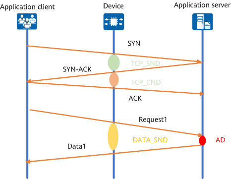

The TCP FPM network model includes the following roles, as shown in Figure 1:
Application client: a PC or another kind of terminal that provides applications to users
Application server: a server, such as a file server, that provides services to application clients
Device: a device that collects statistics on network performance such as network delay and packet loss rate
